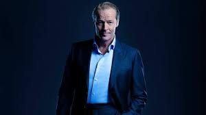

Batman est un personnage de fiction et super-héros de l'univers DC Comics. Il a été créé en mai 1939 par le dessinateur Bob Kane et le scénariste Bill Finger. Il porte un uniforme représentant une chauve-souris. Afin de lutter activement contre le crime, Bruce Wayne devient un justicier masqué qui agit principalement la nuit. Il est reconnaissable grâce à son costume constitué d'une cape en forme d'ailes de chauve-souris et d'un masque aux oreilles pointues. S'il ne possède pas de super-pouvoirs, il compense par une grande dextérité dans les arts martiaux et par son équipement technologique ultra-sophistiqué (exemple : la Batmobile). 
Batman a eu droit à à plusieurs adaptations sur petits comme sur grands écrans. Le super héros de DC Comics a également fait l'objet de produits dérivés, tels qu'une multitude de jouets ou encore des jeux-vidéos.
Il est d'abord un personnage des bandes-dessinées DC Comics à partir de sa création en 1939. Les période les plus connues sont celles de Comics USA, Semic Soleil, Panini/Soleil et la dernière en date Urban Comics. Avant d'être publié dans ces éditions à partir des années 80, les aventures de Batman apparaissaient dans des revues menseulles ou bimestrielles.
Puis Batman fut adapté à la télévision dans la série éponyme de 1966 à 1968 (avec Adam West dans le rôle principal), en dessin-animés de 1992 à 1995 puis de 1999 à 2001 avec Batman Beyond et de 2008 à 2011 avec Batman : L'Alliance des Héros. La série Gotham sortie en 2014 retrace à nouveau tout le parcours de Bruce Wayne.
Au cinéma, il fut incarné par Michael Keaton dans les films de Tim Burton (Batman (1989), Batman le défi (1992)) , par Val Kilmer en 1995 et George Clooney en 1997 dans ceux de Joel Schumacher (Batman Forever et Batman & Robin). Enfin c'est Christian Bale qui endosse le costume du justicier dans la trilogie de Christopher Nolan dans les années 2000 (Batman Begins, The Dark Knight et The Dark Knight Rises). Le prochain Batman sera campé par Ben Affleck dans des films tels que Batman Vs Superman ou encore La Ligue des justiciers ou The Batman (réalisé par l'acteur). En 2015, le super-héros et son acolyte s'opposait dans un film d'animation, Batman Vs Robin. Les méchants les plus connus de l'univers Batman ont eu droit à leur apparition dans certains films : Double-Face (The Dark Knight, Batman, Batman Forever), Bane (The Dark Knight Rises), Mr Freeze (Batman & Robin), Le Pingouin (Batman le défi) ou encore le mythique ennemi juré du super-héros, le Joker. Il est incarné par Jared Leto dans Suicide Squad (le film consacré aux super-vilains de Batman, prévu pour fin 2016). L'aspect clownesque et terrifiant de ce dernier a également été immortalisé par Jack Nicholson dans Batman (1989) ou encore par Heath Ledger dans The Dark Knight (2008).
Batman a également été le héros de plus d'une trentaine de jeux-vidéos, dont la dernière série Arkham Asylum démarée en 2009. Fort de son succès, le jeu va avoir trois suites : Arkham City, Arkham Origins et Arkham Knight, dont les scénarios respectifs sont conçues comme une série cinématographique.